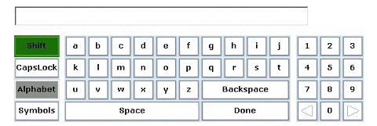

Participants overwhelmingly preferred a horizontal, alphabetic layout to other virtual keyboard layouts we tested.
The best virtual keyboard layout that we found was still four to five times slower than typing the same information on a physical keyboard.
We added a type of tab for switching between the alphabet and a symbol set. None of the participants who used these prototypes had any trouble switching between the alphabet and symbols.
Participants want controller shortcuts for space, delete, and shift on virtual keyboards, but they are unwilling to experiment and figure out the mappings. A dialog that allows users to view any controller key mappings should be implemented.
The scroll speed that users preferred was 85 milliseconds between keys when scrolling. The preferred delay before repeat was 333 milliseconds.